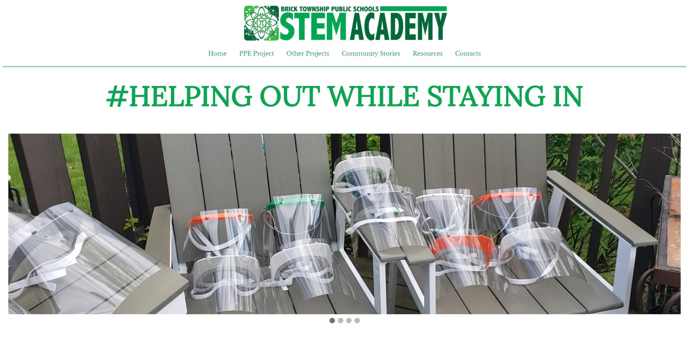

HOWSI
STEM Project
During the COVID-19 Outbreak, my STEM Program decided to try providing relief to healthcare workers, in the form of Personal Protective Equipment (PPE). Our program, Helping Out While Staying In, started by 3D printing face shields and other useful PPE to then deliver to nearby hospitals. Soon after we started, we created a platform to raise funds for our project and to support medical personnel.
To host our project and raise awareness of it, we created a website where we described our project, listed places we sent PPE to, and included other projects similar to ours for visitors to look at.
My involvement includes: Inplementing and coding all pages, maintaining information
Visit the Website